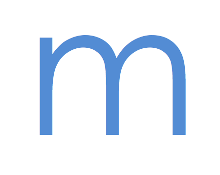

These are my side projects. There has been plenty of thought put into them, but not much end-effort.
Lucky Packet
Lucky Packet is an online gifting service that creates and sends randomised digital packets of goodies. This project started out as a bit of a joke between my boyfriend, Niel, and myself and since he's a web developer we slapped something together that quickly became quite earnest.
Memory Flip
Memory Flip uses integrated media from an event or occasion - including photos, thank you letters and videos. One can then share this amalgamation with those who helped create it. Memory Flip is special to me because it was the first time I put what little knowledge I had of coding to the test.
